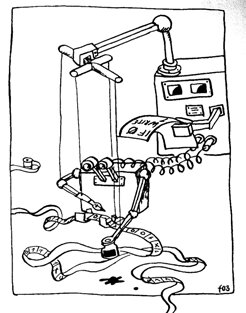

1 Linear Regression
“Programming is the art of telling another human being what one wants the computer to do.”
– Donald E. Knuth
1.1 Computational Problems
Let us first define a computational problem. A (computational) problem is a well-specified task stated in general terms, specifying the desired output for any acceptable input to the problem.
For example, sorting a list of numbers is a computational problem. It stipulates that an acceptable input must be a list or collection of real numbers, and the desired output must be a list with the same numbers but arranged in increasing (equivalently decreasing) order.
Keep in mind that the task of sorting a specific list (e.g. [0, -1, 2, 0]) should not be called a computational problem, since it is not given in general terms. When considering such a specific input to the problem, we may rather call it an instance of the sorting problem as discussed in the previous paragraph.
Formally, we define the sorting problem as follows:
Input: an array of numbers A=\langle a_1, a_2, \ldots, a_n\rangle.
Output: A reordering or permutation \langle a_1', a_2', \ldots, a_n'\rangle of the array A such that a_1'\leq a_2'\leq\ldots\leq a_n.
Exercise 1.1 Name five computational problems that we come across in our daily lives.
adding two numbers
sorting an array
finding the minimum value is an array
searching a query value in an array
finding the shortest path between two vertices in a graph
We use algorithms to solve computational problems.
1.2 What is an Algorithm?
An algorithm is any well-defined computational procedure that takes some value (or set of values) as input and produces some value as output. Thus, an algorithm is a sequence of (finite) computational steps that transform its input to an output.
We may have different algorithms to solve the same computational problem. However, they often differ dramatically in their efficiency.
Writing Pseudocode
In this course, we mostly rely on pseudocodes for describing algorithms. Their implementation in Python will be an less significant step. Pseudocode delineates the logic of an algorithm without explicitly using the syntax of a programming language.
We use the following conventions in our pseudocode:
Indentation indicates block structure.
The looping constructs
while,for, andrepeat-untiland theif-elseconditional construct have interpretations similar to Python.The symbol
//indicates that the remainder of the line is a comment.Variables (such as
i,j, andkey) are local to the given procedure. We won’t use global variables without explicit indication.We access array elements by specifying the array name followed by the index in square brackets. For example,
A[i]indicates theith element of the arrayA.We typically organize compound data into objects, which are composed of attributes.
We pass parameters to a procedure by
value: the called procedure receives its own copy of the parameters, and if it assigns a value to a parameter, the change is not seen by the calling procedureA
returnstatement immediately transfers control back to the point of call in the calling procedure.The boolean operators
andandorare short circuiting.
We give a few examples first.
1.3 Example Algorithms
Let us develop and analyze a few example algorithms.
SUM-ARRAY
Description: SUM-ARRAY is a computational problem that computes the sum of the n numbers in array A[0:n-1].
Input: An array or list A[0:n-1] containing n numbers.
Output: The sum of the numbers in A[0:n-1].
Example 1.1 If the input array is A = <1, 0, -1, 2>, then the return must be 1 + 0 + (-1) + 2 = 2.
Exercise 1.2 (Dry)-run SUM-ARRAY on the input A=<-2, 3, 5, 0, -1>.
Exercise 1.3 Implement SUM-ARRAY in Python.
SUM-ARRAY-POS
Description: SUM-ARRAY-POS is a computational problem that computes the sum of the positive numbers in an array A[0:n-1] of size n.
Input: An array or list A[0:n-1] containing n numbers.
Output: The sum of the positive numbers in A.
Example 1.2 If the input is the array A = <1, 0, -1, 2>, then the return will be 1 + 2 = 3.
Exercise 1.4 (Dry)-run SUM-ARRAY-POS on the input A=<-2, 3, 5, 0, -1>.
Exercise 1.5 Implement SUM-ARRAY-POS in Python.
SEARCH-ARRAY
Description: SEARCH-ARRAY is a computational problem that finds an element in an array.
Input: An array or list A[0:n-1] containing n numbers and a query value x.
Output: An first index i such that A[i]=x, otherwise -1.
Example 1.3 If the inputs are the array A = <1, 0, -1, 2> and the value x = 0, then the return will be 1.
Exercise 1.6 (Dry)-run SEARCH-ARRAY on the input A=<-2, 3, 5, 0, -1> and x=4.
Exercise 1.7 Implement SEARCH-ARRAY in Python.
Exercise 1.8 (MIN-ARRAY) Develop an algorithm to find the minimum value in an array A[0:n-1].
Exercise 1.9 (SUM-MATRIX) Develop an algorithm for summing all the elements in a square matrix A=[a_{i,j}] of size n\times n.
1.4 Analyzing Algorithms
Analyzing an algorithm means to predict the computational resources (e.g. computational time, memory) needed to run the algorithm on different instances or inputs. But how do we compute the running time of an algorithm?
Exercise 1.10 Do you think it is easy to compute the time taken by an algorithm?
Although such a task is almost impossible, we can still pretty easily analyze the computational time of an algorithm—at least conceptually!
Let’s use first review our basic intuition behind running-time of an algorithm:
it should depend on the input size
the larger the input size, the more time needed
running-time should be machine and compiler dependent
In order to make the task easier, we sum the running times for each statement executed. We usually denote the running time of an algorithm on an input of size n by T(n).
SUM-ARRAY
For each line in the algorithm, we assign a cost symbolically, then count how many times the line is visited. This is summarized in the following table.
| Line | Cost | Times |
|---|---|---|
| 2 | c_1 | 1 |
| 3 | c_2 | n |
| 4 | c_3 | n |
| 5 | c_4 | n |
| 6 | c_5 | n |
| 7 | c_5 | 1 |
So, T(n)=(c_1 + c_5) + (c_2 + c_3 + c_4)n=a + bn, where a\coloneqq(c_1 + c_5) and b\coloneqq(c_2 + c_3 + c_4). This is a linear function of the input size.
SUM-MATRIX
Exercise 1.11 Analyze the running time of SUM-MATRIX.
We refer to the pseudocode of SUM-MATRIX for this analysis.
| Line | Cost | Times |
|---|---|---|
| 2 | c_1 | 1 |
| 3 | c_2 | n |
| 4 | c_3 | n\times n |
| 5 | c_4 | n\times n |
| 6 | c_5 | n\times n |
| 8 | c_6 | n |
| 10 | c_7 | 1 |
So, the running time T(n)=(c_1 + c_7) + (c_2 + c_6)n + (c_3 + c_4 + c_5)n^2=a + bn+cn^2, where a\coloneqq(c_1 + c_7), b\coloneqq(c_2 + c_6), and c\coloneqq(c_3 + c_4 + c_5). This is a quadratic function of the input size.
SEARCH-ARRAY
For this analysis, we first note the best case and the worst case inputs.
The best case is when the value x is the first element of the input array A. The search halts in the very first iteration. In this case, the running time is T(n)=a for some constant a.
The worst case occurs when the value x is the last element of the input array A or x does not belong to A. The search, in this case, loops through all the elements of the array. In this case, the running time is T(n)=a + bn for some constants a,b.
